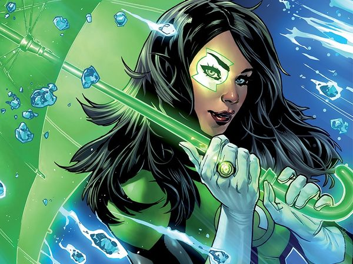

Green Lantern Corps
Jessica Cruz
A Green Lantern living with anxiety.
Jessica Cruz brings the experience of living with anxiety to a role built around courage. Green Lanterns follows her partnership with Simon Baz; her earlier ring story belongs to Justice League.
Continuity: Main DC comics continuity; this profile follows the cited era rather than asserting a permanent present-day status.
- Affiliation
- Green Lantern Corps
- First appearance
- Green Lantern #20 (2013) — cameo; first full appearance in Justice League (vol. 2) #31 (2014)
Story history — History and later developments — spoilers
Jessica is first subjected to the Ring of Volthoom, a weapon whose relationship with fear differs from a Green Lantern ring. She eventually breaks its control and earns membership in the Corps, without that meaning anxiety simply disappears. Green Lanterns makes her partnership with Simon a sustained starting point. Her 2021 Annual explores a later encounter with yellow power; that is a subsequent chapter, not her original status.
Reference scope: DC confirms the initial Green Lantern #20 appearance and later Corps origin. The full Justice League #31 introduction is retained as an issue-level reading pointer.
Profile reviewed 2026-11-04.